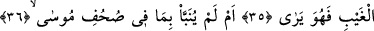
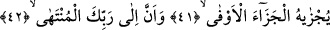
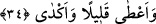
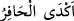

İNSAN İÇİN
KENDİ ÇALIŞMASINDAN BAŞKA
BİR ŞEY YOKTUR
33. Gördün mü arkasını döneni?
34. Azıcık verip sonra vermemekte direneni?
35. Acaba gaybın bilgisi kendi yanındadır da o görüyor mu?
36. Yoksa Musa’nın sahifelerinde yazılı olanlar kendisine haber verilmedi mi?
37. Ve ahdine vefa gösteren İbrahim’in (sahifelerinde yazılı olanlar)
38. Gerçekten hiçbir günahkâr, başkasının günah yükünü yüklenemez.
39. Bilsin ki insan için kendi çalışmasından başka bir şey yoktur.
40. Ve çalışması da ileride görülecektir.
41. Sonra ona karşılığı tastamam verilecektir.
42. Ve şüphesiz en son varış Rabbinedir.
“Gördün mü” Hakk’a tâbi olup “arkasını döneni” yâni onda sebat etmekten yüz
çevireni?
34. Azıcık verip sonra vermemekte direneni?
Onun azabından kurtulmak için malından az bir şeyi rüşvet olarak “Azıcık verip,
sonra vermemekte direneni?” Yâni vereceği şeyi parçalarına bölerek (azıcığını) verdi
ve cimriliği sebebiyle diğer kısmını elinde tuttu (vermedi). Onun için Araplar bir
kimsenin çukur (yani kuyu) kazarken kazılamayacak sertlikte kaya gibi bir şeye varması
durumunda: “Çukuru (yani kuyuyu) kazdı kazdı, sert kayaya dayandı” mânâsında (__WORD__) derler. Daha sonra bu kelime: “Bir şeyi talep edip de kendisine ulaşamayan